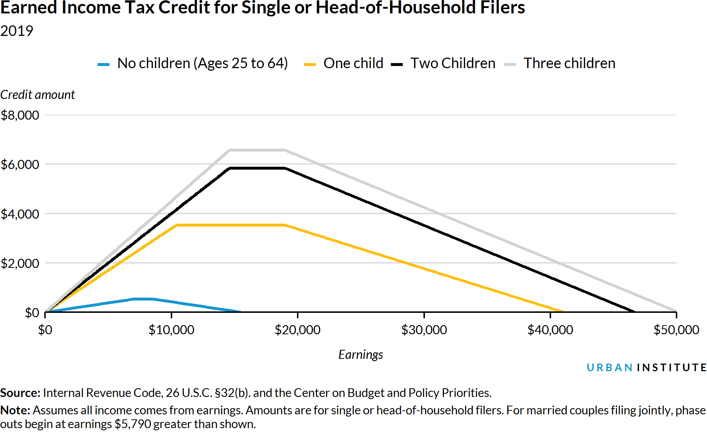

Expanding the Earned Income Tax Credit Can Support Older Working Americans
More older adults are working now than at any point during the previous 25 years. From 1994 to 2018, the share of adults ages 65 to 69 participating in the labor force increased from about 22 percent to about 33 percent.
But workforce participation is considerably lower for older adults who did not earn a college degree or high school diploma and who generally earn lower wages. These adults are particularly vulnerable to unstable retirement and may benefit from working, earning, and saving longer into their sixties.
Extending the earned income tax credit (EITC) to workers over the age of 64 without custodial children and increasing benefits for these workers could raise employment among older Americans. Staying in the workforce longer can help seniors make ends meet and improve their retirement security.
Working longer can boost retirement security
Many older Americans with low incomes or low levels of education claim Social Security benefits at the earliest eligibility age of 62, when their monthly benefits are lowest. Delaying claiming Social Security benefits boosts monthly Social Security income by at least 5 to 8 percent per year delayed, supporting a better quality of life once benefits are claimed.
For workers fortunate enough to have matching employer contributions to retirement plans, delaying retirement can mean a larger 401(k). Working longer can also increase savings and shorten the number of years during which Americans will consume retirement savings.
Encouraging work at older ages can also benefit the broader economy and government finances. More workers means a larger economy and more revenues from payroll taxes to support large programs like Social Security and Medicare.
Where the earned income tax credit comes in
The EITC is a work subsidy that encourages work and reduces poverty. Refundable tax credits like the federal EITC are second only to Social Security when it comes to reducing poverty. The credit creates incentives for work because the size of the benefit increases as earnings increase for workers with low incomes.
As the figure below shows, a single worker with one child gets a $34 credit for every additional $100 she earns, up to $10,370 (yellow line). After that, the credit plateaus and then gradually reduces to nothing. A single worker aged 25 to 64 with no children gets about $8 for every additional $100 she earns, up to $6,920, and no benefits after earning $15,570 (blue line). Any workers older than 64 without custodial children can’t receive EITC benefits.

The EITC has traditionally focused on supporting workers with custodial children. In 1994, workers without custodial children became eligible for the credit, but they needed to be at least 25 years old and younger than 65.
A lot has changed since benefits began in 1994. Back then, Social Security’s full retirement age was 65, while today, the age is gradually increasing to 67. Life expectancy has also increased, and more older adults are working.
To help older workers and encourage employment at older ages, the maximum age to receive the EITC without custodial children (currently 64) could be tied to the Social Security full retirement age of almost 67 or completely eliminated, as the AARP Public Policy Institute proposed a decade ago.
Increasing or eliminating the maximum age will help some older part-time workers without children. But that change alone is unlikely to have far-reaching benefits because the maximum benefit is only $529, and the benefit phases out around the minimum wage for a full-time worker (the blue line in the figure above).
The maximum benefit and phaseout incomes could be increased for childless workers of all ages or at specific ages to ensure that the policy reaches additional older workers with modest incomes.
Varying proposals to expand the EITC
Several current policy proposals include provisions to expand the EITC to older workers without custodial children:
- The Working Families Tax Relief Act, proposed by Senators Sherrod Brown (D-OH), Michael Bennet (D-CO), Richard Durbin (D-IL), and Ron Wyden (D-OR), would increase the maximum age for filers without custodial children from age 64 to 67.
- The Cost-of-Living Refund (CLR) proposal from the Economic Security Project entirely eliminates the maximum age for the EITC. Both this proposal and the Working Families Tax Relief Act would expand benefits for childless workers.
- Two states also recently increased the maximum age for their state EITCs. In 2018, California and Maryland expanded the EITC to include people older than 64 without a qualifying child.
As an expanded or overhauled EITC continues to feature in national debates, policymakers should seriously consider increasing the maximum claiming age and increase benefits to encourage work and support older Americans in the labor force.
Retired power plant operators Don, left, and Walter returned to work to help launch a new power facility on March 06, 2014 in Los Angeles, CA. (Photo by Irfan Khan/Los Angeles Times via Getty Images).